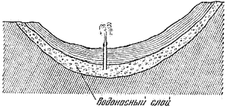
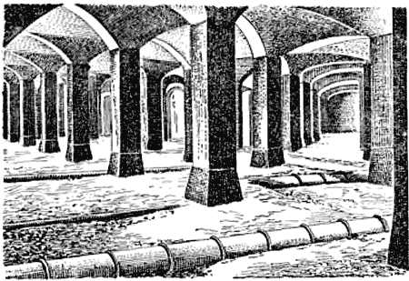
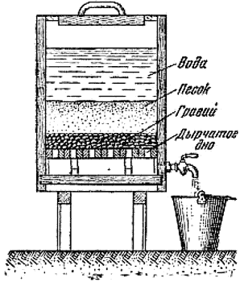
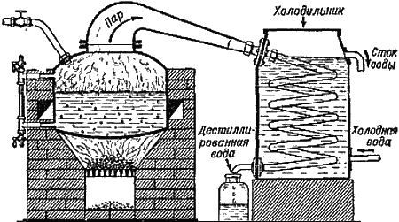

Как получить чистую воду

B история возникновения любого города, любого населённого пункта неразрывно связана с водой. Одним из основных условий благоустройства города надо считать хорошее водоснабжение. Вода нужна для питья и приготовления пищи, для промышленных целей, для удаления нечистот по каналам за пределы города, для поливки улиц, для орошения зелёных насаждений и т. д.
В зависимости от того, идёт ли вода в пищу, подаётся ли в паровой котёл, используется как растворитель в производстве или предназначается для точных научных исследований, она должна быть в той или иной степени освобождена от примесей.
Вода, употребляемая для питья, не должна содержать вредных для здоровья веществ. Она должна быть бесцветна, прозрачна, прохладна (летом иметь температуру по возможности не выше 10–12 градусов), лишена всякого постороннего запаха и вкуса. При оценке качества питьевой воды в первую очередь следует выяснить, не загрязнена ли она отбросами животного происхождения, потому что это может явиться причиной заражения питьевой воды болезнетворными микробами. Резкие изменения температуры колодезной воды, наличие загрязнений или внезапное помутнение её могут служить признаком того, что в водоносный слой попали сточные воды.
Встречающиеся в питьевой воде минеральные соли, как правило, безвредны для здоровья, но если вода содержит их очень много, она становится невкусной.
Большая жёсткость нежелательна и в воде, употребляемой для мытья и стирки. При мытье в жёсткой воде требуется большее количество мыла, так как часть мыла вступает в химическое соединение с солями (кальция, магния, железа) и образует нерастворимые в воде соли. Это и есть тот процесс, который мы обычно называем «свёртыванием» мыла. Кроме того стирка в такой воде понижает носкость тканей: ткани делаются жёсткими и хрупкими и легче рвутся в местах сгибов. Также действует мытьё в жёсткой воде и на волосы, делая их ломкими и клейкими.
Нельзя пользоваться жёсткой водой и для питания паровых котлов. Присутствие в ней солей, особенно солей кальция и магния, ведёт к быстрому разрушению стенок котла. Образование накипи утолщает стенки котла и приводит к излишнему расходу топлива. В технической литературе можно встретить такие цифры перерасхода топлива: при слое накипи в один миллиметр толщиной перерасход топлива составляет 1, 5 процента, при слое в три миллиметра — 5 процентов, а при слое накипи в. 5 миллиметров до 8 процентов.
Различные производства предъявляют к воде самые разнообразные требования. Так, например, при обработке шерсти и шёлка требуется вода, совершенно лишённая солей кальция, магния, железа. В воде, используемой в бумажном производстве, не должны быть соли железа: они могут дать пятна на бумаге. Нежелательны и примеси органических веществ: при загнивании они могут повлечь образование в бумаге грибков.
В крахмальном производстве требуется совершенно прозрачная и бесцветная вода, не содержащая железа, не имеющая запаха и каких бы то ни было растительных остатков — травы, листьев, водорослей и так далее; в противном случае крахмал при сушке станет бурым. Вода должна быть свободна от различных возбудителей брожения — дрожжевых и споровых грибков, сообщающих крахмалу неприятный гнилостный запах.
В воде, применяемой при сахароварении, не должно быть много солей; соли затрудняют варку и кристаллизацию сахара и увеличивают его зольность.
Пивоваренное производство также требует прозрачной воды, без запаха, не загрязнённой вредными минеральными солями и органическими загнивающими веществами.
Интересно, что состав воды диктует производство того или другого сорта пива. Светлые сорта пива получаются только тогда, когда используется вода, бедная углекислыми солями; тёмные же сорта пива требуют, наоборот, воды, в которой имеются преимущественно эти соли.
Если в Мюнхене (Германия) варят тёмные сорта пива, то вовсе не потому, что население предпочитает их другим, а потому, что местная вода богата углекислыми солями.
Однако человек сравнительно редко приспособляется к свойствам той воды, которую предоставляет в его распоряжение природа. В большинстве случаев он находит средства и приёмы для очистки воды, в той степени, конечно, в какой это ему нужно.
Отсутствие поблизости больших водоёмов с чистой водой давно заставило человека искать хорошую воду в недрах земли. С незапамятных времён человек научился добывать грунтовую воду с помощью колодцев.
Вода неглубоких колодцев может быть загрязнена поверхностными водами, просачивающимися через грунт; поэтому желательно устраивать возможно более глубокие колодцы. Хорошую воду с больших глубин обычно дают так называемые артезианские колодцы. Схема устройства такого колодца показана на рисунке 11.

Рис. 11. Схема, артезианского колодца.
Вода рек, озёр и других пресных водоёмов также широко используется для водоснабжения. Однако она часто загрязнена илом, а в крупных населённых пунктах нередко и сточными водами. Эти примеси делают её не пригодной не только для питья, но и для ряда промышленных целей.
Интересно отметить, что вода способна самоочищаться. Если канализационная вода спускается в большую реку, то уже на расстоянии немногих десятков километров вниз по течению речная вода становится такой же чистой, как и до спуска сточных вод. Благодаря растворённому в воде кислороду и деятельности некоторых видов бактерий органические вещества канализационной соды разрушаются. Уменьшается и количество бактерий, принесённых сточными водами: бактерии или пожираются простейшими животными рек или оседают на дно вместе со взвешенными в воде частицами и там погибают. Но часть бактерий, — а среди них и болезнетворные бактерии, — продолжают оставаться в воде довольно долгое время. Кроме того в воде остаются вредные вещества из сточных вод химических заводов. Поэтому на естественное обеззараживание воды подобных водоёмов полагаться нельзя и необходимо искусственно очищать воду.
Прежде чем поступить в водопроводную сеть, вода подвергается специальной очистке на водоочистительной станции. Сначала она отстаивается, а затем направляется в громадные подземные фильтры — бассейны, выложенные каким-нибудь водонепроницаемым материалом (рис. 12). На дно бассейна насыпан толстый слой гравия, а затем песка. Вода просачивается через этот слой и собирается в расположенных на дне сборных трубах и затем поступает в водопроводную сеть. Свежий, хорошо промытый песок — плохой фильтр, поэтому вначале профильтрованная вода выбрасывается. Но вода, проходя через фильтр, оставляет на песчинках илистую плёнку, которая только со временем делает фильтр вполне «созревшим». Такой фильтр уже задерживает и взвешенные в воде частицы, и до 99 процентов всех содержащихся в ней бактерий.

Рис. 12. Подземный фильтр — бассейн.
В значительной степени воду можно очистить, пользуясь весьма простым фильтром. Его устройство показано на рисунке 13. Поверх гравия укладывается слой песка или мешок с ватой, чистыми древесными опилками или измельчённым углём.

Рис. 13. Простой фильтр для воды.
При очень сильном загрязнении воды, особенно в период половодья, даже самого тщательного фильтрования бывает недостаточно. В таких случаях перед фильтрованием прибегают к химической очистке: к воде прибавляют сернокислую соль алюминия. Эта соль в воде разлагается и образует более или менее крупные хлопья. Хлопья захватывают взвешенные в воде частички и медленно падают с ними на дно отстойника.
Для окончательной очистки питьевую воду перед впуском в водопроводную сеть дезинфицируют, употребляя для уничтожения оставшихся бактерий чаще всего озон, хлор или хлорную известь, а иногда и ультрафиолетовое облучение.
Очистку воды, предназначенной для питания паровых котлов и для других технических целей, обычно производят химическими способами. Среди них особенно нужно отметить способ очистки, успешно разрабатываемый советскими учёными. Это — очистка с помощью особых веществ, называемых ионитами. Ионитами могут служить некоторые минералы (например, натриево-алюминиевая соль кремневой кислоты — пермутит), а также искусственные смолы. При фильтровании воды через иониты можно заменить вредные соли, содержащиеся в воде, на соли более безобидные для того или другого производства. Иониты позволяют также провести полное опреснение воды. В настоящее время иониты ещё не получили широкого распространения, но успешное применение их в ряде производств и для бытовых целей указывает на то, что ионитам принадлежит самое ближайшее будущее.
Снабжение населённых пунктов чистой водой — сложная и ответственная задача. Чистая вода также важна для здоровья человека, как и свежий воздух. Однако в капиталистических странах вопрос об охране здоровья населения стоит далеко не на первом месте.
В Англии, например, промышленники, не утруждая себя заботами о нуждах населения, долгое время спускали сточные воды со своих фабрик и заводов прямо в реки. В результате промышленные отбросы сделали воду рек Англии совершенно не пригодной для питья. Известен следующий случай. От реки Темзы однажды исходило такое зловоние, что парламент был вынужден прекратить заседание; парламентская комиссия составила протокол о чрезмерном загрязнении Темзы, написав протокол водой из этой реки, а в заключение выразила сожаление, что не может в качестве доказательства приложить к протоколу запах, исходящий от Темзы!
В городах капиталистических стран есть благоустроенные кварталы, сияющие чистотой, с прекрасной канализационной сетью. Эти кварталы существуют только для тех, у кого есть деньги. Но есть и другие кварталы, кварталы рабочих окраин, утопающие в грязи и зловонии. Ещё Энгельс писал о них так: "Современное естествознание показало, что так называемые "дурные кварталы", в которых скучены рабочие, представляют очаги всех тех эпидемий, которые периодически посещают наши города. Холера, тиф и тифозная горячка, оспа и другие заразные болезни распространяют свои бактерии в зачумлённом воздухе и отравленной воде этих рабочих кварталов; там они почти никогда не исчезают, развиваются, едва только условия позволяют это, в эпидемические массовые болезни и выходят за пределы своих очагов в более богатые воздухом и здоровые части города, населённые господами капиталистами. Господа капиталисты не могут безнаказанно доставлять себе удовольствие обрекать на эпидемические заболевания рабочий класс; последствия падают на них самих, и смерть косит свои жертвы среди капиталистов так же беспощадно, как среди рабочих…
С тех пор, как наука установила этот факт, человеколюбивые буржуа возгорелись пламенным соревнованием в заботе о здоровье своих рабочих… В Германии, по обыкновению, понадобился гораздо более продолжительный срок, пока постоянно существующие и здесь источники заразы развивались до такой степени, которая необходима, чтобы расшевелить сонную крупную буржуазию". Кое-где начали сноситься рабочие кварталы и на их месте создавались широкие светлые улицы и скверы. Но грязные жилища рабочих снова возникали в других местах. По существу, они только переносились с одного места на другое.
Пока существует капитализм, бессмысленны всякие разговоры о серьёзном улучшении условий жизни рабочих. Только в стране социализма эта задача является одной из основных общегосударственных задач.
В дореволюционной России водопровод был в 215 городах, а канализация только в 20. При Советской власти к концу второй пятилетки число водопроводов уже было удвоено и в сотнях городов была проложена канализационная сеть. Законодательством Советского Союза запрещается спуск сточных промышленных вод и других нечистот в поверхностные водоёмы без предварительной очистки, а в отдельных случаях и дезинфекции.
Москва ещё с конца XVIII века пользовалась прекрасной ключевой водой из обильных источников близ Мытищ. Но Мытищинская водоподъёмная станция не могла давать больше 2 миллионов вёдер воды в сутки. Этого количества воды не хватало для быстро растущего города. В начале нашего столетия был построен Рублёвский водопровод, черпавший воду из верхнего течения реки Москвы.
До Октябрьской Революции на каждого москвича приходилось меньше 100 литров воды в сутки, включая сюда, конечно, расход воды промышленными предприятиями, потреблявшими основную её массу.
В настоящее время канал Москва-Волга приносит столице в изобилии чистую волжскую воду. На каждого жителя Москвы приходится свыше 600 литров воды в сутки.
Водопроводная вода чиста, безвредна и приятна на вкус. Только воды некоторых ключей могут состязаться с ней в этом отношении. Но и водопроводная вода далеко не везде может быть использована. Например, для аптек, фотографий и многих научных лабораторий вода из водопровода непригодна — ведь в ней всегда есть небольшое количество растворённых солей и некоторые органические вещества. Каким же путём освободиться от них?
Обычное фильтрование и химическая очистка здесь не помогут. Поэтому воду перегоняют. Перегонка воды производится в специальных аппаратах. На рисунке 14 показан часто употребляющийся для этой цели перегонный куб. Он состоит из котла с крышкой и пароотводной трубкой и холодильника в виде спирали, охлаждаемого снаружи проточной холодной водой. В котле кипит вода. Пары её поступают в холодильник и охлаждаются на холодных стенках змеевика. Капельки воды вытекают в приёмник. Этот процесс называется дистилляцией (или дестилляцией), что означает — стекание каплями, а получаемая вода — дистиллированной.

Рис. 14. Перегонный куб.
Однако и очищенная такой перегонкой вода всё ещё недостаточно чиста, — она содержит и летучие органические вещества, которые перегоняются вместе с водой, и растворённый воздух. Кроме того нужно помнить, что вода — весьма активное химическое вещество. Хотя и в незначительной степени, вода разъедает стенки металлических сосудов. Разъедает или, как говорят, «выщелачивает» вода и стекло, и фарфор.
Освободиться от летучих органических веществ не представляет труда: в перегонный куб добавляют марганцовокислый калий, легко окисляющий эти вещества в нелетучие соединения. Но избежать действия воды на стенки перегонного аппарата из обычного материала нельзя. Поэтому воду, полученную после первой перегонки с марганцовокислым калием в обычном аппарате (медном, лужёном, оловянном, стеклянном или фарфоровом), вновь перегоняют, пользуясь приборами, сделанными из платины, на которую вода не действует.
Полученная таким путём вода содержит в себе только растворённый воздух. Для удаления его воду долго кипятят, а затем охлаждают в безвоздушном пространстве. Такая вода уже совершенно чиста. Хранится она в запаянных платиновых сосудах, без доступа воздуха.
Как видите, получение совершенно чистой воды — довольно сложная и дорогая операция. Однако при изучении свойств воды подобной очистки избежать нельзя.
Совершенно чистая вода имеет неприятный вкус. Поэтому дистиллированную воду не применяют для питья. Кроме того дистиллированная вода вредна для организма: продолжительное употребление воды, лишённой солей, понижает солевой состав клеточного сока и приводит иногда к тяжёлым заболеваниям. Тем не менее в некоторых случаях перегонкой пользуются для получения питьевой воды. Например, в Баку, где грунтовые воды загрязнены нефтью, водопроводная сеть одно время питалась перегнанной морской водой. Однако к этой воде специально добавляли соли и насыщали её воздухом.